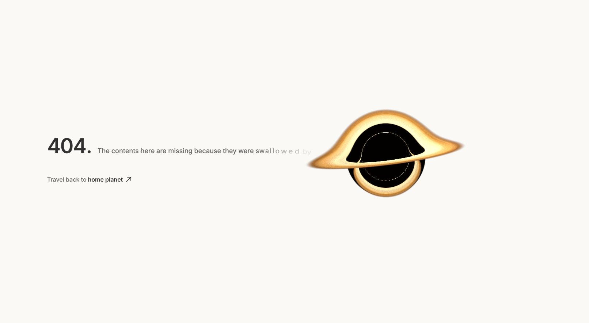
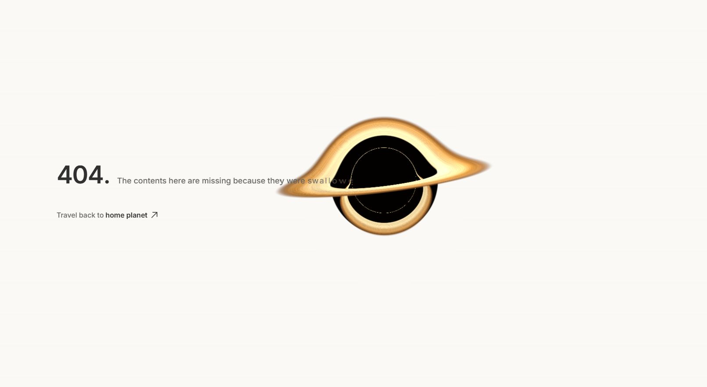
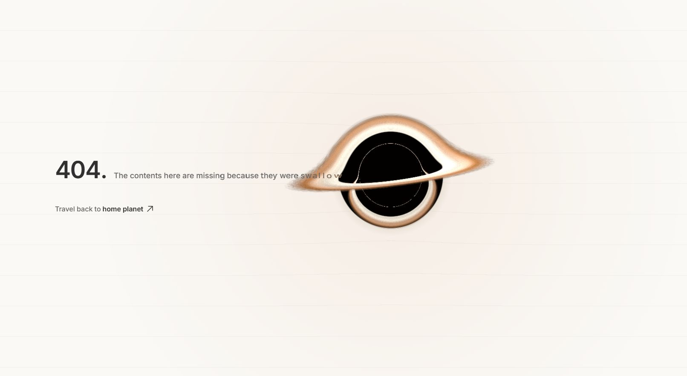

404 — one shared world
Live Chromium captures, in implementation order. Motion phases vary. Click any stage for the full-resolution capture.

0 · Baseline
1 · Larger, aligned hole + page bending

2 · Letter heat, stretch + horizon clipping
3 · Warm spill + contact shadow

4 · Layered light + eroded disk edges
5 · Shared film grain